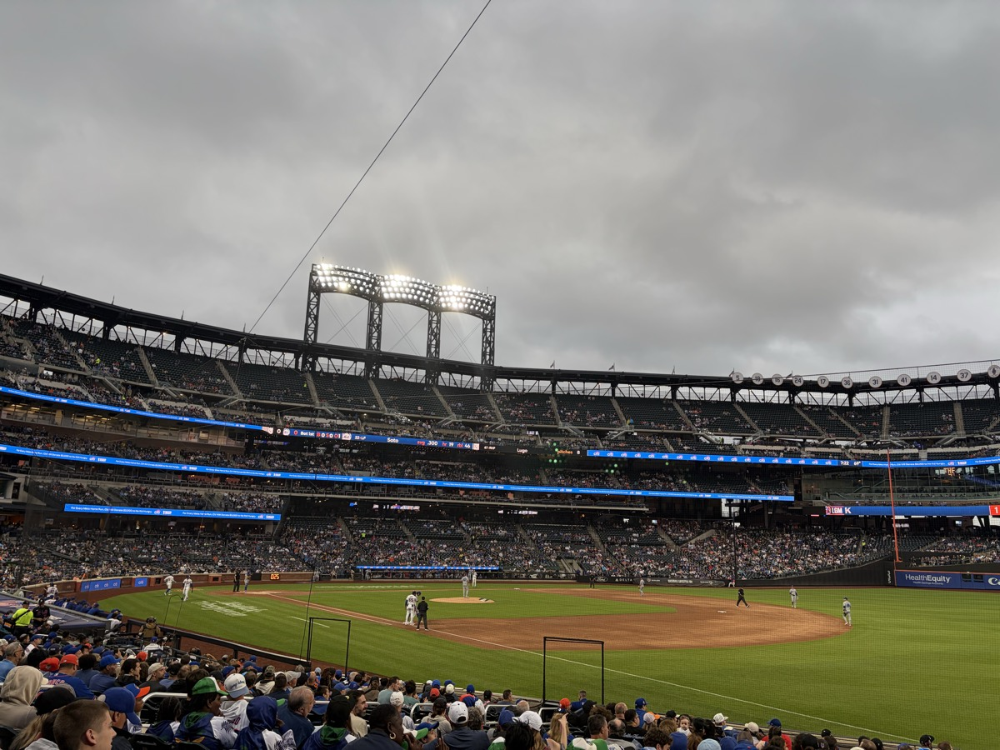
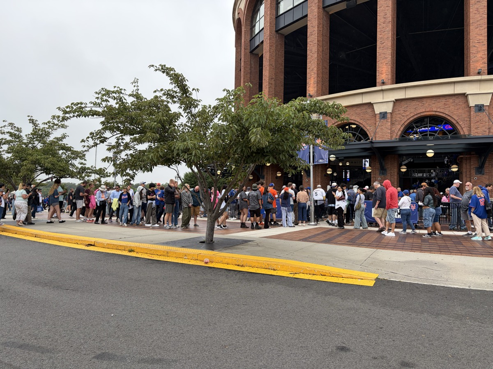
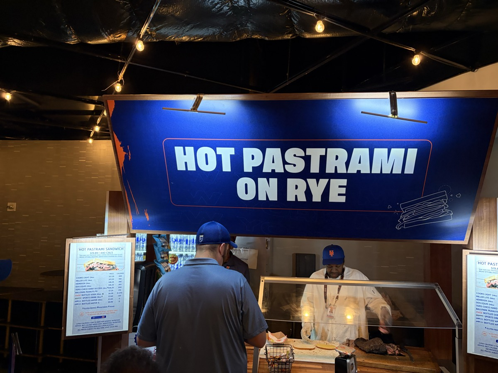
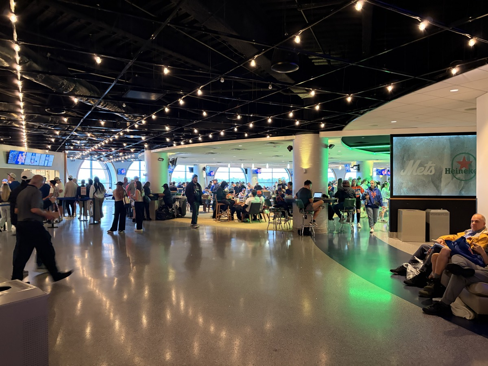
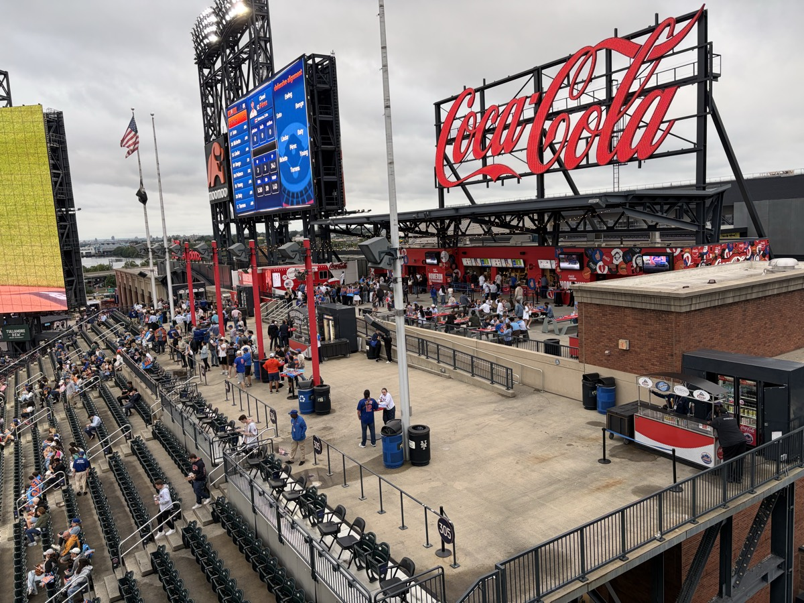
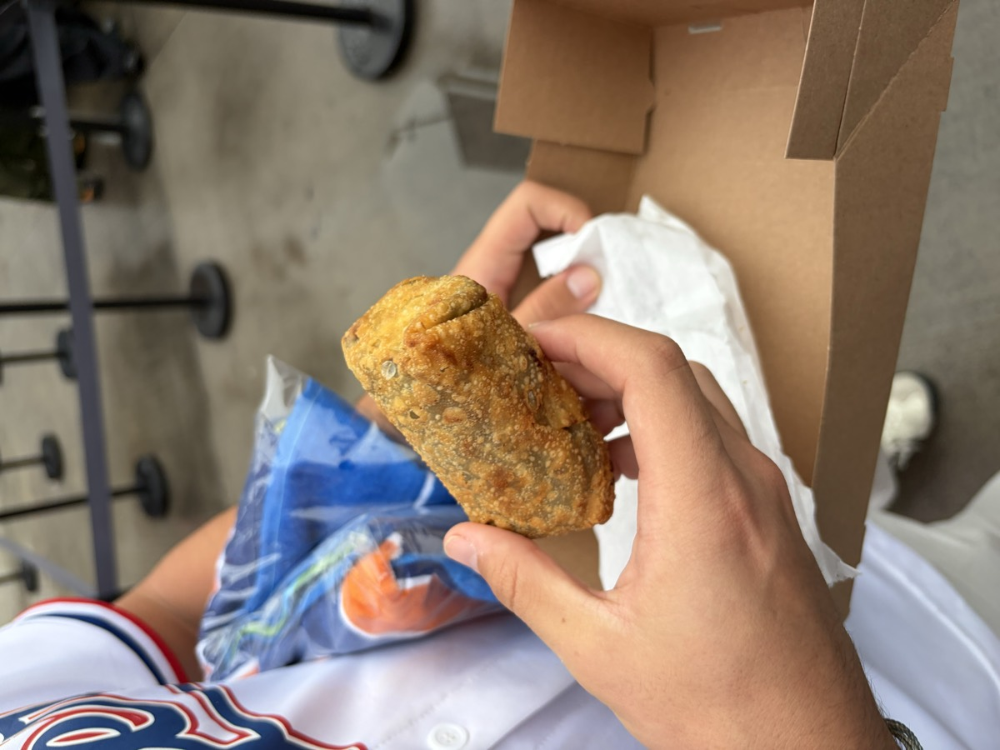
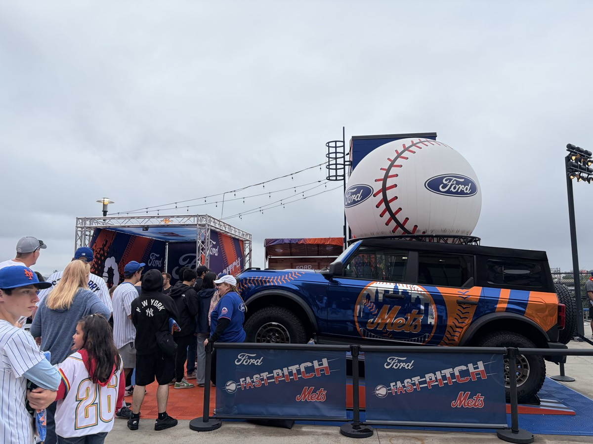
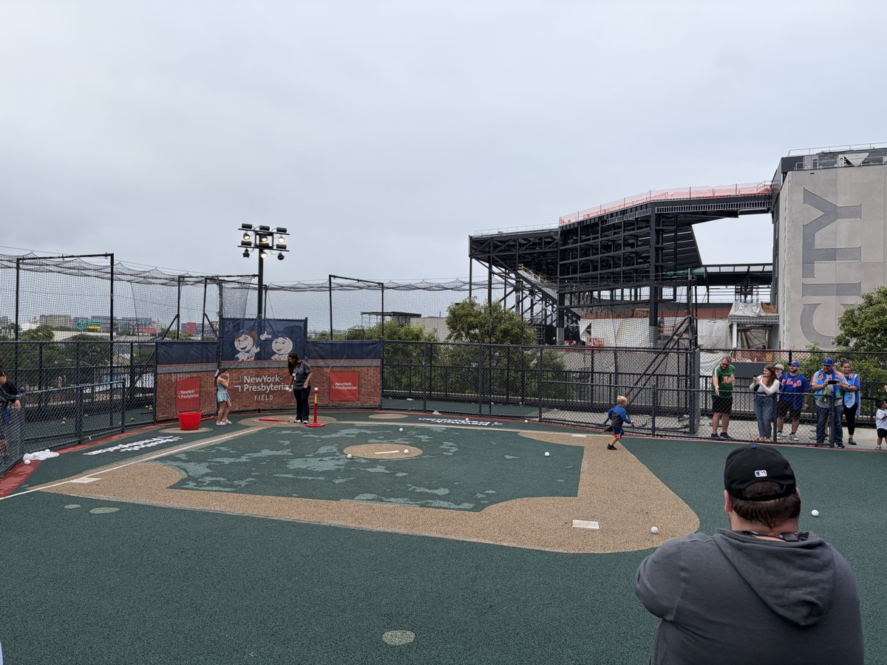

Concept 10 — Scrollytelling ParallaxA cinematic scroll-story · photos take over full-screen, tips drift up over each
MSG
9.2Fan 8.7 · 214

New York, NY · Home of the Knicks
Madison Square Garden
A fan's gameday, told scene by scene — from the street to the final buzzer.
★ Snapback
9.2
Expert · #3
Fan Score
8.7
214 ratings
Scroll to begin ↓

01
Outside
Getting there
Arrive
Best ways in: walking, the subway, the LIRR, or NJ Transit. Driving would be my last choice.
Jack Settleman ✓38

02
Gates
Through the doors
Get in
Come in through the 100 level gates — the merch store there has a way shorter line than the one in the MSG lobby.
Jack Settleman ✓31

03
Chase Lounge
Before the game
Pregame
There's a Chase reserve lounge inside the arena you can book a spot in pregame. Nearby: Nick and Stef's, Stout, and Mustang Harry's.
Jack Settleman ✓22

04
100 Level
Best seats
Your seat
Front rows in the 200s in the center sections beat behind the basket, even down low. The Hyundai Bridge is a cool spot and good value.
Jack Settleman ✓41

05
Steak Sandwich · 107
Best food
Eat
The best food in MSG is the steak sandwich outside section 107. The Garden Market hamburgers are the best basic food in sports. Skip the pizza.
Jack Settleman ✓57

06
Tip-off
Atmosphere
The crowd
Best crowd in the NBA. Be ready to stand, and the seats are tight — but there's plenty of in-game entertainment like t-shirt tosses. The energy is worth it.
Jack Settleman ✓63

07
Jack Settleman ✓9.2
"Best crowd in the NBA. Be ready to stand and the seats are tight, but the energy is worth it. Eat the steak sandwich outside section 107 and the Garden Market hamburgers, and skip the arena pizza. Get in through the 100 level gates for a shorter merch line, and know the alcohol is very expensive."